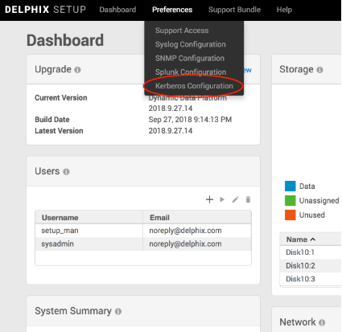
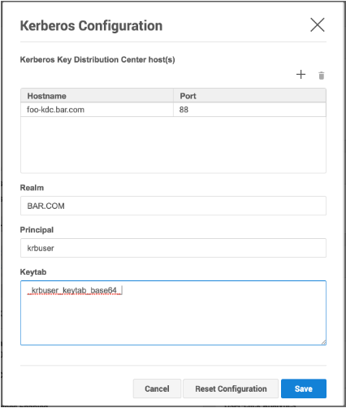
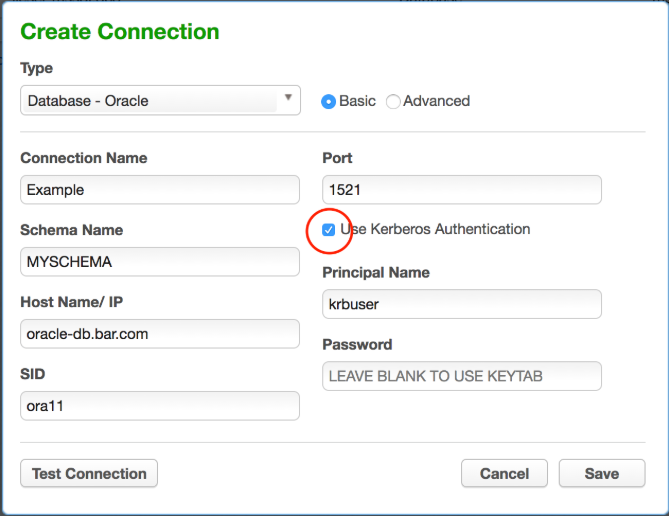
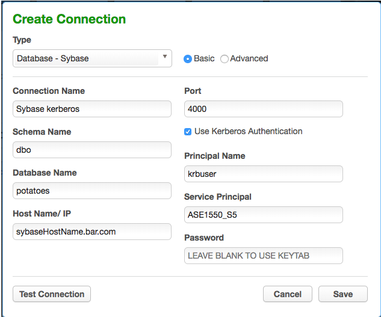

Kerberos Configuration¶
Introduction¶
As of 5.3.0.0, the Delphix Masking Engine supports Kerberos authentication for Oracle, MS SQL Server, and Sybase connections. Utilizing this service requires the presence of a Kerberos Key Distribution Center (KDC) server as well as additional configuration actions to be done on both the the Masking Engine and the database. This document presents configuration instructions for enabling and using Kerberos on the Delphix Masking Engine, as well as reference configurations for enabling Kerberos on the Databases. Although other configurations are possible, the configurations in this document have been validated by Delphix.
Terminology¶
Throughout this document, the following example values are used. To recreate these reference environments, these values must be replaced with real values appropriate for your network environment:
- .bar.com - the DNS domain of then network
- BAR.COM - the Kerberos domain
- me-host - the hostname of the masking engine
- foo-kcd - the hostname KDC server
- krbuser - the kerberos principal to be granted access to the database for masking
Configuring Kerberos on the Appliance¶
This section details the steps required to configure Kerberos on your appliance.
Step 1 On the Delphix System Setup CLI, enable the Kerberos feature.
Note
You may see a warning indicating that special permission is required to enable Kerberos.
This warning can be ignored when enabling Kerberos for use with Masking only.
In the following examples, me-hosts is the hostname of your masking engine.
$ ssh sysadmin@me-host.bar.com me-host> system me-host system> enableFeatureFlag me-host system enableFeatureFlag *> set name=KERBEROS me-host system enableFeatureFlag *> commit me-host system> exit
Step 2 On the Delphix System Setup CLI, configure and enable Kerberos.
$ ssh sysadmin@me-host.bar.com me-host service> kerberos me-host service kerberos> update me-host service kerberos update *> set name=Kerberos_Conf me-host service kerberos update *> edit kdcs me-host service kerberos update kdcs *> edit 0 me-host service kerberos update kdcs 0 *> set hostname=foo-kcd.bar.com me-host service kerberos update kdcs *> back me-host service kerberos update *> set realm=BAR.COM me-host service kerberos update *> set principal=krbuser me-host service kerberos update *> set keytab=_krbuser_keytab_base64_ me-host service kerberos update *> commit
In this case, krbuser_keytab_base64 is the base64 encoded contents of the keytab file for krbuser. The kerberos keytab for a user is typically available from your kerberos administrator.
To display a keytab file in base64 encoding use:
$ base64 ~/krbuser.keytab
Step 2 Alternatively - On the Delphix Server Setup UI configure and enable Kerberos:
a. From the Preferences menu select Kerberos Configuration.

b. Add record(s) for your KDCs, and populate other fields appropriately for your network environment. Upon pressing Save, your configuration will be tested. If the engine is able to authenticate to the KDC with the supplied configuration, the configuration is applied immediately.

Creating Maskings Database Connectors using Kerberos¶
Once the Delphix Appliance is configured for Kerberos, creating Connectors using Kerberos authentication is simple:

Assuming you are using the same user principal configured in Server Setup, the keytab will be used and it is unnecessary to enter a password in the Connector definition.
For Sybase database Connectors, it is necessary to supply the service principal name as an additional configuration item. For Oracle DB, this value is determined automatically. For MS SQL Server it is determined based on the reverse DNS mapping of the Server Name (refer to the section on MS SQL Server below).
Reference Database Configurations¶
The following are a series of reference kerberos configuration procedures and troubleshooting notes for the supported databases. These are meant to serve as examples to be further customized according to the user's specific network environment and security needs.
Oracle Database¶
Overview
This document describes how to set up an Oracle DB instance for kerberized connections. The following steps are described:
- Creating a service principal and adding it to the DB system
- Configuring the database to use kerberos authentication
- Creating DB users identified via kerberos
- Troubleshooting tips
Prerequisites
This document assumes you already have a kerberized network environment with an MIT Kerberos KDC. These procedures have been tested successfully with Oracle database versions 11.2.0.2, 11.2.0.4 and 12.2.1. Oracle database version 12.1.0.1 did not work in our testing.
You will need the following from your kerberos environment:
- The krb5.conf file
- A user principal and associated password or keytab you'd like to use to log into the database
- The ability to create a service principal for the Oracle DB and retrieve the associated keytab
This section of the document uses these example values in addition to those mentioned above:
- The oracle database is: ora-db.bar.com.
- The oracle service name is: oracle
Creating the Oracle Service Principal
The service principal will be named:
Given our default values above, this works out to: oracle/ora-db@bar.com
Notice that the hostname is whatever the database system thinks its hostname is - that is, the output of "uname -n" on the database system, rather than the actual DNS name of the database system. Typically, these values would be the same, but this is not always the case.
On the KDC, run:
# kadmin.local kadmin.local: addprinc -randkey oracle/ora-db@bar.com kadmin.local: ktadd -norandkey -k /var/tmp/ora-db.keytab oracle/ora-db@bar.com
Copy the resulting keytab file (/var/tmp/ora-db.keytab) to the Oracle DB system at this location: /etc/v5srvtab
As root on the Oracle DB system, ensure that the keytab has the correct permissions:
# chown root:oinstall /etc/v5srvtab # chmod 440 /etc/v5srvtab
Finally, this is a good opportunity to copy /etc/krb5.conf from the KDC to /etc/krb5.conf on the Oracle DB system. This file should be readable by all users.
Configuring the Oracle Database for Kerberos
Log into the Oracle DB system as the appropriate use for the database in question.
$ cd $ORACLE_HOME $ vi network/admin/sqlnet.ora
Add the following for Oracle 11:
SQLNET.KERBEROS5_CONF=/etc/krb5.conf SQLNET.AUTHENTICATION_SERVICES=(BEQ,KERBEROS5) SQLNET.KERBEROS5_CONF_MIT=true SQLNET.AUTHENTICATION_KERBEROS5_SERVICE=oracle
Or the following for Oracle 12:
NAMES.DIRECTORY_PATH=(TNSNAMES, EZCONNECT, HOSTNAME) SQLNET.KERBEROS5_CONF=/etc/krb5.conf SQLNET.AUTHENTICATION_SERVICES=(BEQ,KERBEROS5PRE,KERBEROS5) SQLNET.KERBEROS5_CONF_MIT=true SQLNET.AUTHENTICATION_KERBEROS5_SERVICE=oracle
If the database is Oracle 11 (not necessary on Oracle 12):
$ vi dbs/init.ora
Add this line at the end: OS_AUTHENT_PREFIX=""
Creating a DB User Identified via Kerberos
Log into the Oracle DB system as the appropriate database user and open a database session as the DBA:
$ sqlplus / as sysdba
On Oracle 12, you may wish to alter your session to create the user in one of the PDBs:
SQL> alter session set container=MYPDB;
Create the user that will connect to the DB using kerberos:
SQL> create user krbdbuser identified externally as 'krbuser@BAR.COM';
Grant the user privileges necessary for masking.
This example grants all privileges for the sake of simplicity:
Oracle 11:
SQL> grant all privilege to krbdbuser;
Oracle 12: (Customize permissions as necessary for your environment).
SQL> grant connect,resource to krbdbuser; SQL> grant create tablespace, drop tablespace to krbdbuser; SQL> grant create table to krbdbuser; SQL> grant create sequence to krbdbuser; SQL> grant select_catalog_role to krbdbuser; SQL> grant unlimited tablespace to krbdbuser; SQL> grant select_catalog_role to krbdbuser; SQL> grant alter system to krbdbuser; SQL> grant sysoper to krbdbuser; SQL> grant dba to krbdbuser;
Troubleshooting Tips
- Connecting via JDBC with kerberos authentication from Delphix Masking involves two steps: a kerberos login, followed by JDBC connect. A failure stack with an error in the login function indicates a misconfiguration on either the engine or KDC - the engine hasn't even attempted to communicate with the database at that point. Failure stacks are saved in the debugging log for masking.
- Login exceptions that mention a checksum error mean either the password or keytab supplied doesn't match the expected password/key on the KDC for the principal you're trying to use. Server Setup verifies that your keytab works at configuration time, but it could stop working if the key for your principal is updated on the KDC.
- Prior to version 12, Oracle databases instances assume they can create/write a particular temporary file to store kerberos credentials for the DB. This means if you attempt to run multiple kerberized instances of Oracle 11 on the same system or VM, and the databases run as different system users, the first Oracle instance that performs kerberos auth will create and own this file. Kerberos authentication will fail to function on all other instances.
MS SQL Server¶
Overview
This is an overview of the step necessary to get your masking engine talking to a MS SQL Server database using kerberos authentication. Since Active Directory already uses Kerberos for authentication, little or no additional configuration is need on the MS SQL Database server.
The following steps are described in this section:
- Create the necessary SPNs (Service Principal Names) for your MSSQL Database service in AD
- Create the DB Connector on the masking engine
- Creating a keytab for an AD User
- Troubleshooting tips
Prerequisites
Configuring cross-realm trust between Active Directory and an MIT KDC Server is a complex topic, and will not be described here. In the absence of such a setup, it is possible to make the Delphix Appliance a kerberos client of the Active Directory (AD) Server. In this configuration, no additional KDC in necessary. The example below assumes this kind of configuration.
This section of the document uses these example values in addition to or instead of those mentioned above:
- The MSSQL server database is named mssql-db.bar.com.
- The AD user configured for masking access to the MSSQL database is aduser (rather than krbuser in other examples elsewhere in this document).
- The AD user that start the MS SQL Server service on the DB Server is dbuser.
Creating SPNs for the Database Service
MS SQL Server service will typically register several SPNs with AD upon startup. However, there are several conditions which can cause these SPNs to not be registered successfully, or to be registered with service names other than those that are expected by the jTDS JDBC driver employed by Delphix Masking.
The service principal name for an MS SQL Server expected by Delphix Masking is: MSSQLSvc/
For example, the SPN for our example MS SQL Server would be:
MSSQLSvc/mssql-db.bar.com:1433
In addition, it is required that a reverse mapping exist in DNS from the IP address of the MS SQL Server system to the FQDN registered.
The following commands may be run in powershell on the MS SQL Server to assist in debugging SPN related issues:
List all SPNs for dbuser:
setspn -L -U dbuser
Deleting an old SPN associated with dbuser:
setspn -U -D MSSQLSvc/other-server.ad.bar.com:SQL2008R2 dbuser
Here's how to create the SPN describe above:
setspn -U -S MSSQLSvc/mssql-db.bar.com:1433 dbuser
Creating the Database Connector on the Masking Engine
Once the above steps are complete, creating the database connector can be performed using the procedure above. Enter the username and optionally, password of the AD user in the Connector definition. Be sure that the AD user has the sufficient access to the MS SQL Database for masking.
The password field can be left blank when creating the connector if the user is the same user configured in Server Setup for the appliance. Since keytabs are not typically used in an AD environment, it may be useful to create one manually, to avoid having a password in the DB Connector.
Creating a keytab file for an AD user
On a unix or MAC system with MIT kerberos CLI utilities installed:
# ktutil ktutil: addent -password -p krbuser -k 1 -e arcfour-hmac <type password for krbuser> ktutil: addent -password -p krbuser -k 1 -e aes128-cts-hmac-sha1-96 <type password for krbuser> ktutil: addent -password -p krbuser -k 1 -e aes256-cts-hmac-sha1-96 <type password for krbuser> ktutil: write_kt /var/tmp/krbuser.keytab ktutil: exit # base64 /var/tmp/krbuser.keytab ;# This is string to user for keytab in Server Setup kerberos configuration
Note
kvno doesn't matter when using kerberos keytabs with AD. The password must match the active password for the AD user in question.
Troubleshooting Tips
The client uses the incorrect service name This will typically manifest an exception mentioning cred, like:
Caused by: org.ietf.jgss.GSSException: No valid credentials provided (Mechanism level: Fail to create credential. (63) - No service creds)
at sun.security.jgss.krb5.Krb5Context.initSecContext(Krb5Context.java:770)
at sun.security.jgss.GSSContextImpl.initSecContext(GSSContextImpl.java:248)
at sun.security.jgss.GSSContextImpl.initSecContext(GSSContextImpl.java:179)
at com.microsoft.sqlserver.jdbc.KerbAuthentication.intAuthHandShake(KerbAuthentication.java:163)
... 101 common frames omitted
Caused by: sun.security.krb5.internal.KrbApErrException: Fail to create credential. (63) - No service creds
at sun.security.krb5.internal.CredentialsUtil.acquireServiceCreds(CredentialsUtil.java:162)
at sun.security.krb5.Credentials.acquireServiceCreds(Credentials.java:458)
at sun.security.jgss.krb5.Krb5Context.initSecContext(Krb5Context.java:693)
... 104 common frames omitted
Why might this happen:
-
You're using the JTDS JDBC driver, and your MSSQL Server's IP address doesn't have a reverse mapping in DNS. In this case, the driver may construct a service name like: MSSQLSvc/
: and try to use that. Either correct DNS to have a valid reverse mapping for the IP of your SQL server, or manually add an SPN to active directory for the name the JDBC client is trying to use: - Determine the user that starts MSSQL Server on your DB machine.
-
From powershell, do: setspn -AU MSSQLSvc/
:1433 Example: setspn -AU MSSQLSvc/10.43.100.101:1433 AD\dbuser
-
The database server has multiple DNS names (FQDNs). In this case, SPNs may be registered only for some of them. It may be necessary to add SPNs for the other FQDNs as above.
- The MS SQL Server didn't automatically register an SPN. There is a limit (in the thousands) to the number of SPNs that may be registered for a given AD user. It is quite possible to hit this limit in an environment where many MS SQL Server VMs are actively created and destroyed with the same configuration.
Note
In Active Directory, setspn isn't creating a service principal with distinct key as is typical for services on MIT KDCs - rather it's mapping the service principal to the key for the AD user in question.
The SPN for the SQL Server is registered to the incorrect AD account
Manifests as an exception with this text: GSS failure: Defective token detected (Mechanism level: AP_REP token id does not match!)
Resolution: From powershell on the MS SQL Server:
PS> setspn -Q <SPN>
This will show what user has the SPN registered.
PS> setspn -U -D <SPN> <WRONG_ACCT>
This will unregister the SPN from that user
PS> setspn -AU <SPN> <CORRECT_ACCT>
Sybase¶
Creating a principal and corresponding keytab on the KDC
- SSH into the KDC as the user with sufficient privileges to run kadmin.local
- Run the kerberos configuration CLI with kadmin.local
-
Add a new principal you want to authenticate as later with:
add_principal <principalName>We’re going to continue to use krbuser as our example kerberos principal.
-
Once you’ve created the principal and provided it a password, we need to generate a keytab for it. Do so via the following command:
ktadd -norandkey -k v5srvtab krbuserIn this case, v5srvtab is the keytab filename, and it will be placed into whatever directory you’ve invoked kadmin.local from. Presumably this will be the home directory of the machine.
-
You now have everything you need done on the KDC, but you will need your keytab file later as well as the krb5.conf file that is located in the home directory of the KDC, so consider moving them somewhere (probably your local machine) that will be convenient for you to access later.
Configuring the Sybase image for Kerberos
- Start up a Sybase database.
- Note: Each sybase database machine may have multiple sybase instances running on it at a given point in time. In this case, I am configuring the ASE_1550_S5 instance, but these steps can be done on any instance so long as you change the $SYBASE_HOME directories accordingly.
-
Connect to the particular sybase instance you are working on and invoke the following sql statement:
sp_configure ‘use security services’, 1 -
Continue to create a user with the same name as the principal name you created previously on the KDC, in this case krbuser:
sp_addlogin krbuser, <password> -
Change your $SYBASE environment variable to point to the sybase directory for whichever instance you are configuring. In this case, we want to do:
export SYBASE=/opt/sybase/15-5 -
Open the $SYBASE/interfaces file, and find the header for whichever Sybase instance you are configuring. In our case, it is ASE_1550_S5. You should see something that looks like this:
ASE1550_S5 master tcp ether 10.43.89.241 5500 master tcp ether localhost 5500 query tcp ether 10.43.89.241 5500 query tcp ether localhost 5500
You want to add the following line to this:
secmech 1.3.6.1.4.1.897.4.6.6This line is static, while the other lines in this section are dynamically generated for your instance. So, your final result should look something like this:
ASE1550_S5 master tcp ether 10.43.89.241 5500 **< your numbers will vary** master tcp ether localhost 5500 **< your numbers will vary** query tcp ether 10.43.89.241 5500 **< your numbers will vary** query tcp ether localhost 5500 **< your numbers will vary**
-
Navigate to $SYBASE/OCS-15_0/config. You should see libtcl64.cfg and libtcl.cfg
a. Change the contents of libtcl64.cfg to be this:
[DIRECTORY] ;ldap=libsybdldap.so ldap://ldaphost/dc=sybase,dc=com [SECURITY] csfkrb5=libsybskrb64.so secbase=@bar.com libgss=/lib64/libgssapi_krb5.so.2.2 [FILTERS] ;ssl=libsybfssl.so
b. Change the contents of libtcl.cfg to be this:
[DIRECTORY] ;ldap=libsybdldap.so ldap://ldaphost/dc=sybase,dc=com [SECURITY] csfkrb5=libsybskrb.so secbase=@bar.com libgss=/lib64/libgssapi_krb5.so.2.2 [FILTERS] ;ssl=libsybfssl.so
c. Note that the @bar.com value is our realm name that is determined by the KDC. Realistically, you should never have to deal with this, and it should never change, but if for some reason it does, that value needs to be updated.
-
Create a directory for those Kerberos config files you created on the KDC in the previous set of steps:
sudo mkdir /krbCopy into /krb your keytab file v5srvtab and config file krb5.conf that you took off of the KDC earlier.
-
Head to $SYBASE/ASE-15_0/install and open the RUN_ASE1550_S5 file. We’re going to add information so that Sybase knows where to find our keytab and our krb5.conf file, so change the content to look like this:
1 2 3 4 5 6 7 8 9 10 11 12 13 14 15 16 17 18
#!/bin/sh # # ASE page size (KB) : 4096 # Master device path: /opt/sybase/devices/data5/S5_master.dat # Error log path: /opt/sybase/errorlogs/ASE1550_S5.log # Configuration file path: /opt/sybase/15-5/ASE-15_0/ASE1550_S5.cfg # Directory for shared memory files: /opt/sybase/15-5/ASE-15_0 # Adaptive Server name: ASE1550_S5 # export **KRB5_KTNAME**=/krb/v5srvtab export **KRB5_CONFIG**=/krb/krb5.conf /opt/sybase/15-5/ASE-15_0/bin/dataserver \ -kASE1550_S5@bar.com \ -d/opt/sybase/devices/data5/S5_master.dat \ -e/opt/sybase/errorlogs/ASE1550_S5.log \ -c/opt/sybase/15-5/ASE-15_0/ASE1550_S5.cfg \ -M/opt/sybase/15-5/ASE-15_0 \ -sASE1550_S5
-
Reboot the Sybase instance you’re working so that it reads in all of these config changes.
-
Connect to the Sybase instance as the dbo user so that you may give dbo privileges to your kerberos authentication login on a particular database within the instance. Below is an example of doing so with the database potatoes:
>> sql5 1> use potatoes 2> go 1> sp_addalias instructions, dbo 2> go Alias user added. (return status = 0)
-
Now, to access the Sybase instance via kerberos and confirm success, you can do the following set of commands (I put these three lines into a script called connect.sh for future convenience):
1 2 3 4
#!/bin/sh kinit -k -t /krb/v5srvtab <yourPrincipalName> export SYBASE='/opt/sybase/15-5' /opt/sybase/15-5/OCS-15_0/bin/isql64 -V -SASE1550_S5
Testing by creating a Kerberos Connector on the Delphix Engine
-
Start by configuring your engine for kerberos. SSH into the engine as the delphix user and run the following command:
/opt/delphix/server/bin/jmxtool tunable set enabled_features KERBEROS true -
Log into the virtualization engine and proceed through first-time setup if you need to.
-
Once first-time setup is complete, log into the Delphix Setup page, proceed to Preferences > Kerberos Configuration. Add the information for your KDC to configure it with the principal name you created earlier, krbuser. You can get the keytab by running the following command on your keytab file:
base64 v5srvtabCopy the output as plaintext into the keytab field of the kerberos configuration box.
-
Finally, create a Sybase connector with parameters that look like this, and if your “test connection” attempt succeeds you’re all set!
